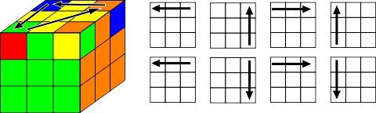
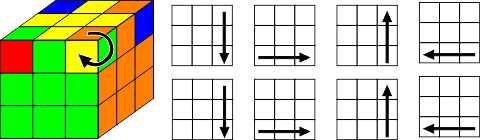

KONEC? - žlutý kříž
- Přetočení kostky tak, aby žlutý střed byl nahoře
- Následně uvidíte '0' '2' nebo '4' hrany žlutou nahoru
- Provedení stejného algoritmu z kterékoliv situace (vrchní vrstva musí být správně otočena)

Pokud bude kříž automaticky hotov, postupte k dalšímu kroku.
Složení hran
- Teď máte '2' nebo '4' hrany vrchní vrstvy složené (posunutím horní vrstvy)
Pokud pouze 2 ↓ - Ujistěte se, že složené dílky jsou vpravo a vzadu (obrázek ukazuje dílky nesložené)
⚠
"Pokud budou složené dílky vrchní vrtsvy naproti sobě, udělejte algoritmus z jakékoliv pozice a posuňte horní vrstvou tak, aby nastala pozice uvedená na obrázku. (Může jít i o jiné barvy) Následně pokračuje od bodu 2."
⚠

Správné umístění rohů
- Nalezení 1 rohu, který je na správném místě (může být 0)
- Otočení kostky tak, aby správně umístněný dílek byl v pravé přední pozici
- Udělání algoritmu

Pokud bude 0 rohů na správném místě, udělejte algoritmus jako kdyby nějaký byl.
Po dodělání algoritmu bude 1 dílek na správném místě (opakujte body nad obrázkem)
Po dodělání algoritmu bude 1 dílek na správném místě (opakujte body nad obrázkem)
Při velkém štěstí se Vám mohlo stát, že všechny 4 byly na správném místě, tudíž pokračujte posledním krokem.
Složení hran
Už jen otočení jednoho dílku po druhém a kostka bude vyřešena.
Dílek se kterým pracujete MUSÍ být na pravé horní pozici

(Tento krok bude potřeba zopakovat 2x či 3x)
TENTO ALGORITMUS MŮŽE NARUŠIT ZBYTEK KOSTKY.
NEBERTE PONIČENÍ V POTAZ A PO OTOČENÍ JEDNOHO DÍLKU ŽLUTOU NAHORU POKRAČUJTE TEXTEM UVEDENÝM NÍŽE
NEBERTE PONIČENÍ V POTAZ A PO OTOČENÍ JEDNOHO DÍLKU ŽLUTOU NAHORU POKRAČUJTE TEXTEM UVEDENÝM NÍŽE
NEPŘETÁČEJTE KOSTKU! Vždy jen posuňte vrchní vrstvou, aby nepřetočený dílek byl na pravé, horní pozici.